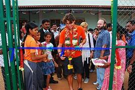
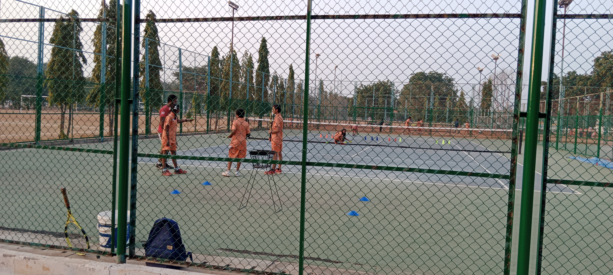

Rafal Nadal Foundation Tennis School
 
In a remarkable collaboration between the Fundación Rafa Nadal (Rafa Nadal Foundation) and the Rural Development Trust (RDT), discussions unfolded to establish a tennis coaching cum education center in India. This endeavor, facilitated through the Fundación Rafa Nadal, culminated in the inauguration of the Nadal Educational & Tennis School (NETS) in Ananthapuram, with tennis maestro Rafa Nadal himself gracing the opening ceremony on 17 October 2010.
NETS stands as a beacon of opportunity for aspiring youngsters, offering a unique blend of tennis training and education. This non-residential center is tailored to cater to gifted individuals aged between 12 to 14 years, providing them with a platform to harness their talents on both academic and athletic fronts. The multifaceted approach of NETS transcends the conventional boundaries of sports training, integrating daily computer and English classes into the curriculum to ensure a well-rounded educational experience.
A pivotal aspect of NETS is its year-long nutrition program, a testament to its commitment not only to athletic development but also to the overall well-being of its students. The program entails the provision of two nutritious snacks during the day, comprising bananas and milk in the morning session and egg with Ragi (millet) malt in the evening session. This strategic focus on nutrition underscores the holistic approach adopted by NETS, acknowledging the symbiotic relationship between physical well-being and optimal performance. Recognizing the geographical diversity of its potential participants, NETS extends its reach through a dedicated bus service. This service ensures that children from far-off areas have access to the opportunities presented by the center, reinforcing the commitment to inclusivity and equal access to quality education and sports training.
The human capital behind NETS is a blend of expertise and passion. A team comprising two academic instructors, one tennis coordinator, and four full-time tennis coaches forms the backbone of the center. To elevate the coaching standards and expose the young talents to diverse perspectives, international tennis players and coaches voluntarily contribute their expertise. This collaboration not only enriches the training experience but also serves as a platform for the resident trainers to continually enhance their skills.